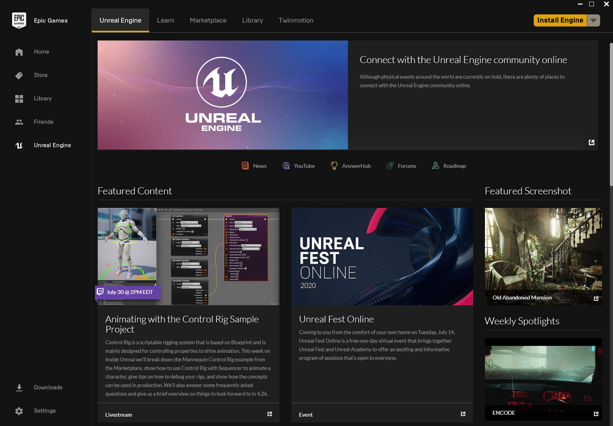
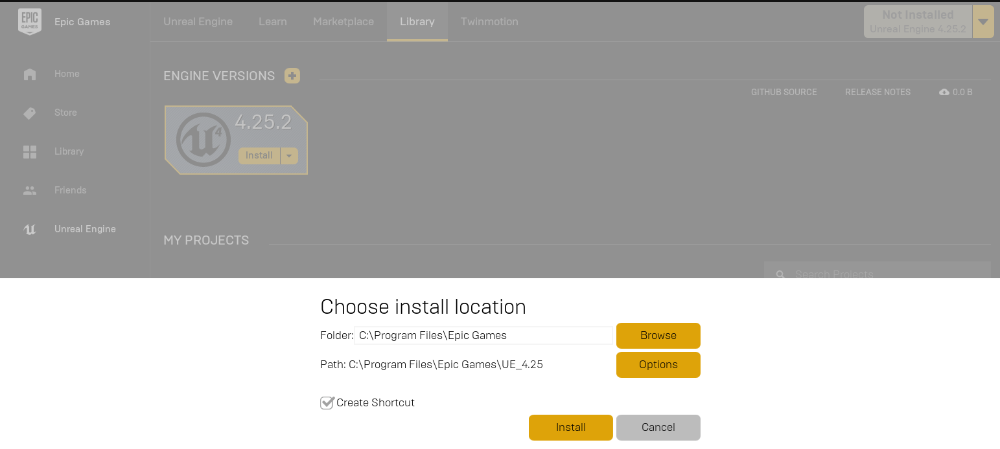

Build AirSim on Windows#
Install Unreal Engine#
- Download the Epic Games Launcher. While the Unreal Engine is open source and free to download, registration is still required.
- Run the Epic Games Launcher, open the
Unreal Enginetab on the left pane. Click on theInstallbutton on the top right, which should show the option to download Unreal Engine >= 4.25. Chose the install location to suit your needs, as shown in the images below. If you have multiple versions of Unreal installed then make sure the version you are using is set tocurrentby clicking down arrow next to the Launch button for the version.
Note: AirSim also works with UE >= 4.24, however, we recommend 4.25. Note: If you have UE 4.16 or older projects, please see the upgrade guide to upgrade your projects.


Build AirSim#
- Install Visual Studio 2019. Make sure to select Desktop Development with C++ and Windows 10 SDK 10.0.18362 (should be selected by default) while installing VS 2019.
- Start
Developer Command Prompt for VS 2019. -
Clone the repo:
git clone https://github.com/Microsoft/AirSim.git, and go the AirSim directory bycd AirSim.Note: It's generally not a good idea to install AirSim in C drive. This can cause scripts to fail, and requires running VS in Admin mode. Instead clone in a different drive such as D or E.
-
Run
build.cmdfrom the command line. This will create ready to use plugin bits in theUnreal\Pluginsfolder that can be dropped into any Unreal project.
Build Unreal Project#
Finally, you will need an Unreal project that hosts the environment for your vehicles. AirSim comes with a built-in "Blocks Environment" which you can use, or you can create your own. Please see setting up Unreal Environment.
Setup Remote Control (Multirotor only)#
A remote control is required if you want to fly manually. See the remote control setup for more details.
Alternatively, you can use APIs for programmatic control or use the so-called Computer Vision mode to move around using the keyboard.
How to Use AirSim#
Once AirSim is set up by following above steps, you can,
- Double click on .sln file to load the Blocks project in
Unreal\Environments\Blocks(or .sln file in your own custom Unreal project). If you don't see .sln file then you probably haven't completed steps in Build Unreal Project section above. - Select your Unreal project as Start Up project (for example, Blocks project) and make sure Build config is set to "Develop Editor" and x64.
- After Unreal Editor loads, press Play button.
Tip
Go to 'Edit->Editor Preferences', in the 'Search' box type 'CPU' and ensure that the 'Use Less CPU when in Background' is unchecked.
See Using APIs and settings.json for various options available.
AirSim on Unity (Experimental)#
Unity is another great game engine platform and we have an experimental integration of AirSim with Unity. Please note that this is work in progress and all features may not work yet.
FAQ#
How to force Unreal to use Visual Studio 2019?#
If the default update_from_git.bat file results in VS 2017 project, then you may need to run the C:\Program Files\Epic Games\UE_4.25\Engine\Binaries\DotNET\UnrealBuildTool.exe tool manually, with the command line options -projectfiles -project=<your.uproject> -game -rocket -progress -2019.
If you are upgrading from 4.18 to 4.25 you may also need to add BuildSettingsVersion.V2 to your *.Target.cs and *Editor.Target.cs build files, like this:
public AirSimNHTestTarget(TargetInfo Target) : base(Target)
{
Type = TargetType.Game;
DefaultBuildSettings = BuildSettingsVersion.V2;
ExtraModuleNames.AddRange(new string[] { "AirSimNHTest" });
}You may also need to edit this file:
"%APPDATA%\Unreal Engine\UnrealBuildTool\BuildConfiguration.xmlAnd add this Compiler version setting:
<Configuration xmlns="https://www.unrealengine.com/BuildConfiguration">
<WindowsPlatform>
<Compiler>VisualStudio2019</Compiler>
</WindowsPlatform>
</Configuration>I get error: 'where' is not recognized as an internal or external command#
You have to add C:\WINDOWS\SYSTEM32 to your PATH enviroment variable.
I'm getting error <MyProject> could not be compiled. Try rebuilding from source manually#
This will occur when there are compilation errors. Logs are stored in <My-Project>\Saved\Logs which can be used to figure out the problem.
A common problem could be Visual Studio version conflict, AirSim uses VS 2019 while UE is using VS 2017, this can be found by searching for 2017 in the Log file. In that case, see the answer above.
If you have modified the AirSim plugin files, then you can right-click the .uproject file, select Generate Visual Studio solution file and then open the .sln file in VS to fix the errors and build again.
I get error C100 : An internal error has occurred in the compiler when running build.cmd#
We have noticed this happening with VS version 15.9.0 and have checked-in a workaround in AirSim code. If you have this VS version, please make sure to pull the latest AirSim code.
I get error "'corecrt.h': No such file or directory" or "Windows SDK version 8.1 not found"#
Very likely you don't have Windows SDK installed with Visual Studio.
How do I use PX4 firmware with AirSim?#
By default, AirSim uses its own built-in firmware called simple_flight. There is no additional setup if you just want to go with it. If you want to switch to using PX4 instead then please see this guide.
I made changes in Visual Studio but there is no effect#
Sometimes the Unreal + VS build system doesn't recompile if you make changes to only header files. To ensure a recompile, make some Unreal based cpp file "dirty" like AirSimGameMode.cpp.
Unreal still uses VS2015 or I'm getting some link error#
Running several versions of VS can lead to issues when compiling UE projects. One problem that may arise is that UE will try to compile with an older version of VS which may or may not work. There are two settings in Unreal, one for for the engine and one for the project, to adjust the version of VS to be used.
- Edit -> Editor preferences -> General -> Source code -> Source Code Editor
- Edit -> Project Settings -> Platforms -> Windows -> Toolchain ->CompilerVersion
In some cases, these settings will still not lead to the desired result and errors such as the following might be produced: LINK : fatal error LNK1181: cannot open input file 'ws2_32.lib'
To resolve such issues the following procedure can be applied:
- Uninstall all old versions of VS using the VisualStudioUninstaller
- Repair/Install VS 2019
- Restart machine and install Epic launcher and desired version of the engine